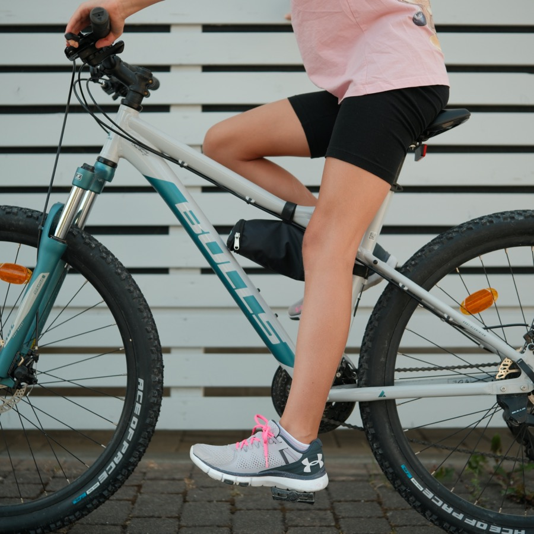

Ein professionelles Bikefitting kostet mehrere Hundert Euro – aber mit den richtigen Handgriffen kannst du die wichtigsten Einstellungen selbst vornehmen. Nimm dir Zeit, probiere aus und vertraue deinem Körpergefühl.

Mach nach dem Einstellen eine kurze Probefahrt – mindestens 10–15 Minuten. Der Körper braucht etwas Zeit um sich zu melden. Kleinere Korrekturen danach sind völlig normal. Wenn nach mehreren Ausfahrten noch Beschwerden da sind: ein professionelles Bikefitting beim Fachhandel lohnt sich – besonders bei Rädern über 1.500 €.